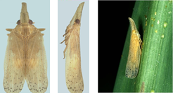
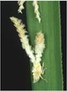

| Home |
| MAIZE |
| 1. Maize Shoot fly |
| 2. Stem Borer |
| 3. Pink Stem Borer |
| 4. Corn worm / Ear worm |
| 5. web worm |
| 6. aphid |
| 7. shoot bug |
| 8. climbing cut worm |
| 9. ash weevil |
| 10. phadka grasshopper |
| 11. leafhopper |
| questions |
| download notes |
PESTS OF MAIZE :: Minor Pests :: Leafhopper
11. Leafhopper: Pyrilla perpusilla (Lophopidae: Hemiptera)
Distribution and status: India, Pakistan
Host range: Sugarcane, wheat, barley, oats, maize, sorghum, baru, guinea grass and sudan grass
Damage symptoms: It can cause severe damage when long spells of rainy or cloudy days are prevalent. As high nitrogen applicaton favours multiplication, it is also referred to as richman’s pest. Symptoms are yellow leaves, covered with black sooty mould; top leaves get dried up and lateral buds germinate.
Bionomics: The adults lay 300 - 536 eggs in clusters on the underside of leaves. Egg period 8 - 28 days. Nymphs are soft and pale brown to pale orange with two characteristic tufts of waxy secretion at the end of abdomen. Pupal period 2 - 6 months. Adult is soft, straw coloured with the head pointing forward as snout. Wings fold over the abdomen like hood; densely veined and transparent. Adult live for about 2 - 5 months. 3- 4 generations are completed in a year.
 |
 |
Nymph |
|
Management
- Avoid excessive use of nitrogenous fertilizers
- Set up light trap
- Detrash on 150 and 210 DAP.
- Release 4000 -5000 cocoons or 4-6 lakhs egg of Epiricania melanoleuca (Lepidopteran predator)per ha
- Conserve predators viz., Brumus suturalis, Chilomenes sexmaculatus and Coccinella
septumpunctata
- Spray endosulfan 35 EC 2 L in 1000 L water/ ha